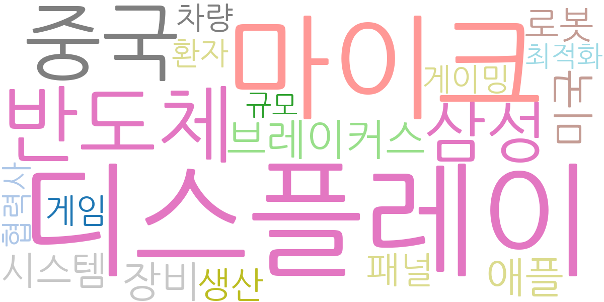
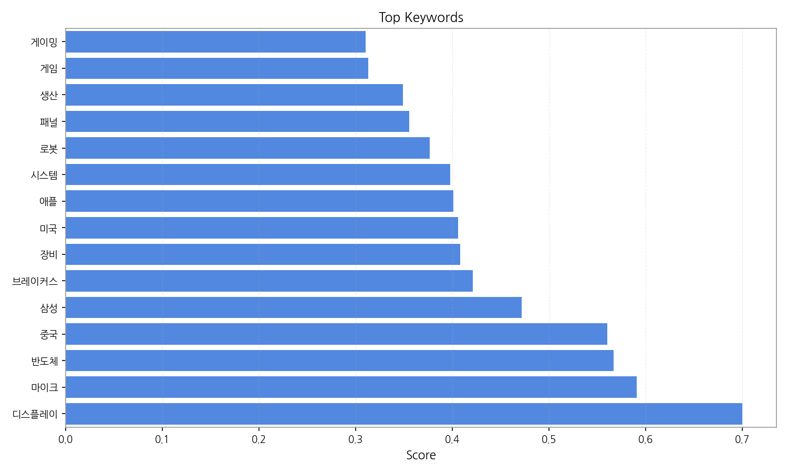
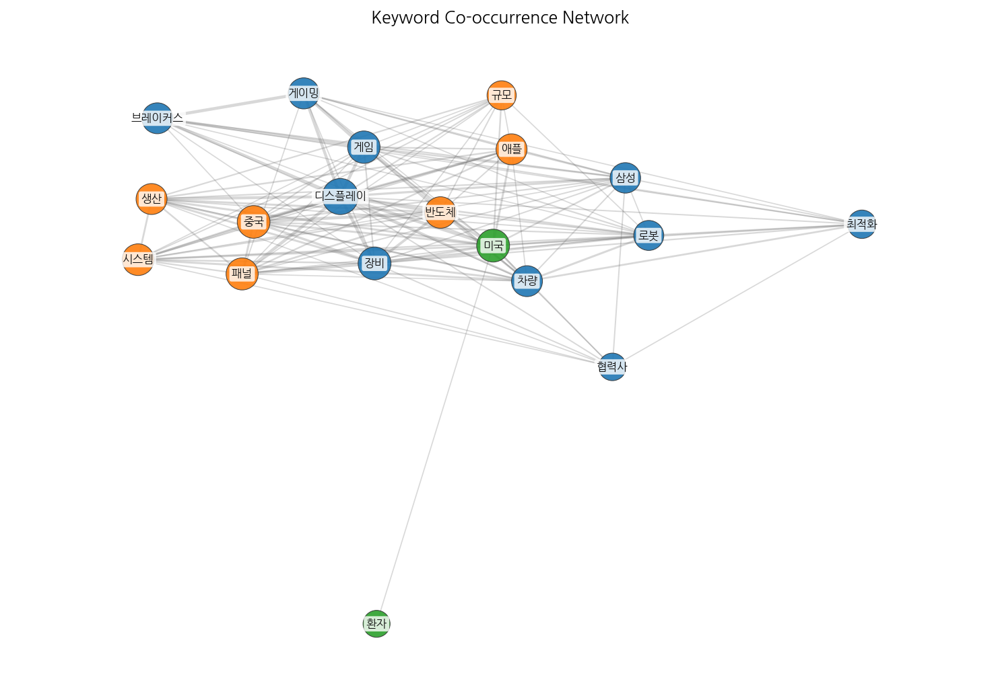
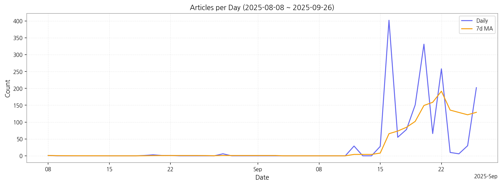

1. 핵심 맥락:
2. 최근 변화/스파이크:
3. 실무 인사이트:

| Rank | Keyword | Score |
|---|---|---|
| 1 | 디스플레이 | 0.700 |
| 2 | 마이크 | 0.591 |
| 3 | 반도체 | 0.567 |
| 4 | 중국 | 0.560 |
| 5 | 삼성 | 0.472 |
| 6 | 브레이커스 | 0.421 |
| 7 | 장비 | 0.408 |
| 8 | 미국 | 0.406 |
| 9 | 애플 | 0.401 |
| 10 | 시스템 | 0.398 |
| 11 | 로봇 | 0.377 |
| 12 | 패널 | 0.355 |
| 13 | 생산 | 0.349 |
| 14 | 게임 | 0.313 |
| 15 | 게이밍 | 0.310 |



1. 핵심 맥락:
2. 최근 변화/스파이크:
3. 실무 인사이트:
| Idea | Target | Value Prop | Score |
|---|---|---|---|
| XR용 초고해상도 마이크로 OLED 모듈 | 북미 빅테크 기업 (Meta, Apple, Google 등), XR 기기 제조사 | 기존 대비 2배 이상의 해상도와 주사율을 제공하는 초고해상도 마이크로 OLED 모듈을 통해 몰입감 넘치는 XR 경험을 제공합니다. 초저전력 설계로 배터리 사용 시간을 극대화합니다. | 4.50 |
| AI 기반 디스플레이 공정 자동화 및 수율 개선 솔루션 | 디스플레이 제조사 (자사 포함) | AI 기반의 실시간 공정 데이터 분석 및 예측 모델을 통해 불량 발생 가능성을 사전에 감지하고, 공정 조건을 최적화하여 수율을 극대화합니다. 로봇 기반 자동화 시스템을 통해 생산 효율성을 향상시킵니다. | 4.30 |
| 차량용 AR HUD (Head-Up Display) 솔루션 | 글로벌 완성차 OEM (Tier 1 부품사 포함) | AI 기반의 상황 인지 기술을 통해 운전 상황에 최적화된 정보만 선별적으로 제공하여 시선 분산을 최소화하고 안전 운전을 지원합니다. MicroLED 기반 고휘도, 고해상도 디스플레이로 주간 시인성을 확보합니다. | 4.20 |
| 퀀텀닷 컬러 필터 기반 MicroLED 디스플레이 | 프리미엄 TV 제조사, 디지털 사이니지 기업 | 퀀텀닷 컬러 필터를 적용하여 색 재현율과 휘도 균일성을 극대화한 MicroLED 디스플레이를 제공합니다. 넓은 색 영역과 높은 명암비로 더욱 생생한 화질을 구현합니다. | 4.00 |
| IT 기기용 폴더블 OLED 패널 솔루션 | 글로벌 스마트폰 제조사 (삼성전자, 화웨이 등), 노트북 제조사 | UTG (Ultra Thin Glass) 소재와 최적화된 힌지 구조를 적용하여 내구성을 극대화하고 주름 발생을 최소화한 폴더블 OLED 패널을 제공합니다. 얇고 가벼운 디자인으로 휴대성을 높입니다. | 3.80 |